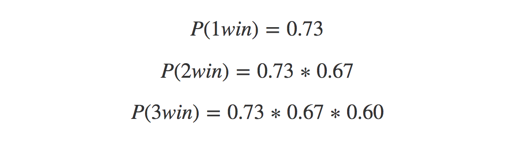

Forecasting with External Regressors
This post focuses on some of my favorite things – data, sports, and forecasting – and will outline how to leverage external regressors when creating forecasts. We’ll do some webscraping in R and Python to create our dataset, and then forecast how many people will visit Tom Brady’s wikipedia page.

- Overview
- Collecting Month Level Traffic
- Collecting Historical Game Data
- Model Selection And Validation
- Seasonal ARIMAX Model
Overview
Imagine it’s January 1st, 2015 and the New England Patriots have made the playoffs yet again. You run a webpage dedicated to Tom Brady and want to ensure you have enough servers ready to meet traffic to your website during the playoffs. Based on the past few years, you’ve noticed that traffic during January and February increases when the patriots win playoff games. Thus you need a traffic forecast for these two months to determine how many people will visit your site.
Additionally, you want to quantify the effect of the number of playoff games won on monthly traffic. For example, what happens if the Patriots win two playoff games instead of one? Finally, you want an estimate of the probability of each of these scenarios unfolding–that is, the chances of winning 0, 1, 2, or all 3 playoff games. To achieve these objectives, we’ll rely on the following sources of data:
- Month Level Internet Traffic
- Historical Game Outcomes
- Historical Betting Lines
I’ll go through the collection process associated with each and then we’ll generate some forecasts!
Collecting Month Level Traffic
Let’s start by loading the required libraries and setting our working directory.
libs = c('wikipediatrend', 'dplyr', 'data.table', 'rvest', 'forecast', 'artyfarty', 'knitr', 'ggplot2', 'forcats', 'lazyeval')
lapply(libs, require, character.only = TRUE)
wd = "your_working_directory_here"
setwd(wd)
Now we’ll collect historical page views. This data comes from Wikipedia and will serve as the dependent variable in our forecast.
page_views_by_day <- wp_trend("Tom Brady", from = "2006-09-01",
to = "2015-03-01")
page_views_clean$date = as.Date(page_views_clean$date)
page_views_clean <- page_views_by_day %>%
dplyr::mutate(year = year(date),
month = month(date),
week = week(date)) %>%
dplyr::rename(page_views = count) %>%
dplyr::select(date, year, month, week, page_views)
Let’s have a look at the first 5 rows
Collecting Historical Game Data
Next we’ll collect data on how the New England Patriots have historically performed during the playoffs, and then join this with our page views data set. I’m using the rvest package to scrape the outcomes (win or lose) of the Patriots vs. each of the other 31 NFL teams.
n_teams = 32
team_name = "new-england-patriots"
game_data = data.frame(NULL)
for(team_number in as.character(seq(1, n_teams))){
print(paste0("GATHERING DATA FOR TEAM: ", team_number))
url = paste0("http://www.footballdb.com/teams/nfl/",
team_name,
"/teamvsteam?opp=",
team_number)
historical_record = url %>%
read_html() %>%
html_nodes(xpath = '//*[@id="leftcol"]/div[9]/table') %>%
html_table(fill = TRUE, header = TRUE) %>%
as.data.frame()
game_data = rbind(game_data, historical_record)
}
game_data_clean = game_data %>%
dplyr::rename(date = Date) %>%
dplyr::mutate(new_date = substring(date, 1, 10)) %>%
dplyr::mutate(new_date = as.Date(new_date,
format = "%m/%d/%Y")) %>%
dplyr::arrange(desc(new_date)) %>%
dplyr::select(date, new_date, Result)
Again let’s see what our data looks like:
Overall looks pretty good but we still have some cleaning to do. What we want here are the dates of the playoff games and their outcomes. Luckily there is an asterik delineating regular season games from playoff games, and we’ll use this symbol to identify the playoff games.
game_data_outcome = game_data_clean %>%
dplyr::mutate(date_length = nchar(
as.character(date))
) %>%
dplyr::mutate(playoff_game = ifelse(date_length == 20, 1, 0),
result = substring(Result, 1, 1)) %>%
dplyr::mutate(result = ifelse(result == "W", 1, 0)) %>%
dplyr::select(new_date, playoff_game, result) %>%
dplyr::rename(date = new_date)
Now we are ready to combine our game data with our traffic data.
joined_df = dplyr::left_join(page_views_clean, game_data_outcome) %>%
dplyr::mutate(playoff_game = ifelse(is.na(playoff_game) == TRUE |
playoff_game == 0, 0, 1)) %>%
dplyr::filter(year > 2007 & year < 2016)
playoff_wins = joined_df %>%
dplyr::filter(playoff_game == 1) %>%
dplyr::group_by(year) %>%
dplyr::summarise(playoff_games_won = sum(result))
playoff_games = joined_df %>%
dplyr::group_by(year) %>%
dplyr::summarise(playoff_games_played =
sum(playoff_game)) %>%
dplyr::left_join(playoff_wins) %>%
data.frame() %>%
dplyr::mutate(playoff_games_won = ifelse(is.na(
playoff_games_won) == TRUE, 0,
playoff_games_won))
joined_df_game = joined_df %>%
dplyr::inner_join(playoff_games) %>%
dplyr::group_by(year, month,
playoff_games_played,
playoff_games_won) %>%
dplyr::mutate(month_max_date = max(date)) %>%
dplyr::group_by(year, month, playoff_games_played,
playoff_games_won, month_max_date) %>%
dplyr::summarise(monthly_page_views = sum(page_views)) %>%
data.frame()
joined_df_game$playoff_games_played = ifelse(joined_df_game$month %in% c(1, 2),
joined_df_game$playoff_games_played, 0)
joined_df_game$playoff_games_won = ifelse(joined_df_game$month %in% c(1, 2),
joined_df_game$playoff_games_won, 0)
And we’ll have a look at the first 5 rows:

Visualizing Wins vs. Traffic
Now that we have our analytical dataset, let’s visualize the relationship between playoff games and page views during Jan/Feb.
my_plot_theme = function(){
font_family = "Helvetica"
font_face = "bold"
return(theme(
axis.text.x = element_text(size = 18,
face = font_face,
family = font_family),
axis.text.y = element_text(size = 18,
face = font_face,
family = font_family),
axis.title.x = element_text(size = 20,
face = font_face,
family = font_family),
axis.title.y = element_text(size = 20, face = font_face, family = font_family),
strip.text.y = element_text(size = 18, face = font_face, family = font_family),
plot.title = element_text(size = 24, face = font_face, family = font_family),
legend.position = "top",
legend.title = element_text(colour = "white", size = 16,
face = font_face,
family = font_family),
legend.text = element_text(colour = "white", size = 14,
face = font_face,
family = font_family)))
}
monokai_values = c("#F92672", "#66D9EF", "#A6E22E", "#FD971F")
monokai_line_color = "#A59F85"
train_test_df <- joined_df_game %>%
dplyr::filter(month_max_date <= '2015-02-28') %>%
dplyr::mutate(train_test_flag = ifelse(year > 2014, "test", "train"))
playoff_dates = train_test_df %>%
dplyr::filter(month %in% c(1, 2)) %>%
dplyr::select(month_max_date)
train_df_final = train_test_df %>%
dplyr::filter(train_test_flag == 'train') %>%
dplyr::select(year, month, month_max_date,
playoff_games_won, monthly_page_views)
ggplot(train_df_final, aes(x = month_max_date, y = monthly_page_views/1e3)) +
geom_line(size = 1, color = monokai_line_color) +
geom_point(aes(color = as.factor(playoff_games_won)), size = 4) +
theme_monokai_full() +
scale_color_manual(values = monokai_values[1:3],
guide = guide_legend(title = "Playoff Games Won")) +
my_plot_theme() +
xlab("Date") + ylab("Monthly Page Views (K)")

The above plot suggests that playoff games/wins do relate to page views. Now we’ll do some validation work to see if including this information as an external regressor actually improves our forecasts.
Model Selection and Validation
Since the period we want to forecast is Jan/Feb 2015, we’ll hold out the two months of traffic results from Jan/Feb 2014 as a way to identify which inputs will likely yield the most accurate forecasts. We will specify an ARIMA model with a single external regressor (games won and games played), and compare the results on our validation set against an ARIMA model that relies on history alone.
# filter data until last year and create training and validation time periods
train_validation = joined_df_game %>%
dplyr::filter(month_max_date <= "2014-02-28") %>%
dplyr::mutate(train_test_flag = ifelse(year < 2014,
"train", "validation"))
training_df = train_validation %>%
dplyr::filter(train_test_flag == 'train')
validation_df = train_validation %>%
dplyr::filter(train_test_flag == 'validation')
# create our time-series object
page_views_ts = ts(training_df$monthly_page_views,
frequency = 12,
start = c(head(training_df, 1)$year,
head(training_df, 1)$month),
end = c(tail(training_df, 1)$year,
tail(training_df, 1)$month))
# specify that we want to make a forecast 2 periods ahead
prediction_horizon = 2
# arima model with no external regressors
arima_no_xreg = auto.arima(page_views_ts)
arima_no_xreg_f = data.frame(forecast(arima_no_xreg, h = prediction_horizon))
#arima model with playoff games played as an external regessor
arima_games_played = auto.arima(page_views_ts, xreg = training_df$playoff_games_played)
arima_games_played_f = data.frame(forecast(arima_games_played, h = prediction_horizon,
xreg = validation_df$playoff_games_played))
#arima model with playoff games won as an external regessor
arima_games_won = auto.arima(page_views_ts, xreg = training_df$playoff_games_won)
arima_games_won_f = data.frame(forecast(arima_games_won,
h = prediction_horizon,
xreg = validation_df$playoff_games_won))
#
forecast_df = rbind(arima_no_xreg_f, arima_games_played_f, arima_games_won_f) %>%
dplyr::rename(predicted_monthly_views = Point.Forecast) %>%
dplyr::mutate(forecast_model =
c(rep('No.Xreg', 2),
rep('Games.Played', 2),
rep('Games.Won',2)),
actual_monthly_views = rep(validation_df$monthly_page_views, 3)) %>%
dplyr::select(forecast_model, predicted_monthly_views, actual_monthly_views)
Now we can compare our predictions against what actually happened. There are a variety of ways to measure error in forecasting, and in this case we’ll use the Mean Average Percent Error (MAPE), which is calculated as follows:

Where et is the difference between the predicted and actual and yt is our actual. As with all error metrics, there are pros and cons to quantifying error with MAPE. The main advantage is ease of interpretation. Telling someone “our forecasts were off by 50%” is easier than saying “our forecasts were off by 10,458 units”. The main disadvantage is that the scale on which your calculating your error matters. For example, a 10% miss on 10 units (1) is a lot smaller than a 10% MAPE on 100,000 units (10K) yet they are treated equally. Additionally, having a small value in the denominator can make a forecast look much worse than it actually is. Therefore, if you are working with small quantities, I’d advise using a different error metric. The quantities in this example are far from zero, so MAPE serves as a simple way to convey forecasting error. Let’s compare our MAPEs between the different forecasting inputs.
calcMape = function(predicted_amt, actual_amt){
return(round(mean(abs(predicted_amt - actual_amt)/actual_amt) * 100, 1))
}
validation_output = forecast_df %>%
dplyr::group_by(forecast_model) %>%
dplyr::do(mape = calcMape(.$predicted_monthly_views,
.$actual_monthly_views)) %>%
data.frame() %>%
dplyr::mutate(mape = unlist(mape),
forecast_model = factor(forecast_model)) %>%
dplyr::mutate(forecast_model = fct_reorder(forecast_model, mape, .desc = FALSE))
ggplot(validation_output, aes(x = forecast_model, y = round(mape, 0),
fill = forecast_model, label = as.character(round(mape, 0)))) +
geom_bar(stat = "identity") +
theme_monokai_full() +
my_plot_theme() + # see end of post for my_plot_theme() function
scale_fill_manual(values = monokai_values[1:nrow(validation_output)]) +
xlab("Forecasting Inputs") + ylab("MAPE") +
theme(legend.position = "none") +
geom_label(label.size = 1, size = 10, color = "white")
Based on the results from our validation set, the model that uses Games Won as an external regressor performed the best with a less than stellar 114 percent MAPE. We could reformulate our external regressor, try a different forecasting approach, or bring in additional covariates to improve our MAPE, but we’ll keep it simple and just consider the aforementioned approaches.
So we figured out which input works best, and we have all of the data we need to make a traffic forecast. There’s only one problem: We won’t know how many games the Patriots are going to win during the playoffs. Thus we’ll need t generate a prediction – 0, 1, 2, or 3 – for the expected number of games won as well, which will then serve as an input into our final, traffic-forecasting model.
Collecting Betting Lines
To help us make an informed decision about the number of games the Patriots will win during the playoffs, we can leverage historic NFL betting lines. If you aren’t familiar with a betting lines, it’s basically a way for odds-makers to encourage an equal number bets for both teams playing in a game.
Previously we used R to scrape data from the web. We’ll switch over to Python for a little bit to gather the win probabilities associated with different betting lines. The BeautifulSoup module is awesome for doing webscraping, so that’s what we’ll use here.
import urllib2
from bs4 import BeautifulSoup
import re
import pandas as pd
import sys
opener = urllib2.build_opener()
opener.addheaders = [('User-Agent', 'Mozilla/5.0')]
temp_url = "https://www.teamrankings.com/nfl/odds-history/results/"
page = opener.open(temp_url)
page_soup = BeautifulSoup(page, 'html.parser')
table_data = page_soup.find_all("tr", {"class": "text-right nowrap"})
spread = []
win_pct = []
for line in table_data:
line_list = str(line).splitlines()
try:
spread.append(re.search('<td>(.*)</td>', line_list[1]).group(1))
win_pct.append(line_list[4].split(">")[1].split("<")[0])
except:
spread.append(None)
win_pct.append(None)
historic_odds_df = pd.DataFrame({'spread': spread,
'win_pct': win_pct})
historic_odds_df.to_csv(sys.argv[1] + "/historic_win_percentages.csv", index = False)
And here is how we can execute the spead_scrape.py script from R.
python_location = system("which python", intern = TRUE)
exe_py_command = paste0(python_location, " ", wd, "/spread_scrape.py ", wd)
If you aren’t familiar with executing scripts in other languages from R (or the terminal), we can break this command down into further detail. It’s quite simple. There are three components to above command:
- The location of the Python binaries on my machine ‘//anaconda/bin/python’.
- The location of the Python script ‘my_working_directory/spread_scrape.py’
- The location where I want the output to end up ‘my_working_directory’
You’ll also notice that in the last line of the Python script, theres a sys.argv[1]. That’s basically says, “I am going to execute this script from the command line, and I’m going to pass in 1 argument (in this case the output directory).
Now let’s actually do the scraping and see what we get back.
# Execute the python script from R
system(exe_py_command)
# Read the output back into R
historic_win_percent = data.table::fread(paste0(wd, "/historic_win_percentages.csv"),
data.table = FALSE)
Let’s look at the first 20 observations.
Perfect. The interpretation is really simple: A team favored by 12 points has historically won ~78% of their games; bump that spread up to 16 points and there has never been a team favored by 16 points that has lost. Let’s see what that looks like starting at a zero-point spread, when both teams are perceived by odds-makers to be an equal match.
historic_win_percent_clean = historic_win_percent %>%
dplyr::filter(spread <= 0) %>%
dplyr::mutate(win_pct = substring(win_pct, 1,
(nchar(win_pct) - 1))) %>%
dplyr::mutate(win_pct = as.numeric(win_pct),
spread = abs(spread)) %>%
dplyr::rename(favorite = spread)
ggplot(historic_win_percent_clean, aes(x = favorite, y = win_pct)) +
geom_point(alpha = 0) +
geom_line(alpha = 0) +
stat_smooth(span = 2.0, se = FALSE, size = 2, colour = monokai_line_color) +
ylim(50, 110) +
xlim(0, 27) +
scale_x_continuous(breaks = seq(0, 25, 5)) +
scale_y_continuous(breaks = seq(50, 110, 5)) +
theme_monokai_full() +
my_plot_theme() +
xlab("Point Favorite") + ylab("Chance of Winning") +
geom_vline(xintercept = 7, size = 2, colour = monokai_values[2]) +
geom_vline(xintercept = 5, size = 2, colour = monokai_values[3]) +
geom_vline(xintercept = 3, size = 2, colour = monokai_values[4]) +
annotate("rect", xmin = 18, xmax = 19, ymin = 88, ymax = 90, fill = monokai_values[2]) +
annotate("text", label = "Game 1 Spread", x = 23, y = 89, size = 8, color = monokai_values[2]) +
annotate("rect", xmin = 18, xmax = 19, ymin = 85, ymax = 87, fill = monokai_values[3]) +
annotate("text", label = "Game 2 Spread", x = 23, y = 86, size = 8, color = monokai_values[3]) +
annotate("rect", xmin = 18, xmax = 19, ymin = 82, ymax = 84, fill = monokai_values[4]) +
annotate("text", label = "Game 3 Spread", x = 23, y = 83, size = 8, color = monokai_values[4])
We only know the spread for Game 1 because we are generating our forecasts at the beginning of January. The Patriots are favored by 7, and we know historically that when a team is favored by 7 they win about ~73% of the time. So I’m feeling at least 1 win. What about 2? Here we are going to make an educated guess. We can assume that each subsequent game will be more challenging for the Patriots, so we’ll make a prediction of a 5-point favorite. Finally, if the Patriots play in the Superbowl, let’s predict they’ll be a 3-point favorite. If we assume that the outcome of each playoff game is independent of the prior game (which, barring a major injury to a key player, is a reasonable assumption) we can calculate the probability of each of these scenarios unfolding:

Seasonal ARIMAX Model
Now that we’ve trained our model let’s see what it looks like.
## Series: page_views_train_final
## ARIMA(1,1,1)(0,1,1)[12]
##
## Coefficients:
## ar1 ma1 sma1 train_df_final$playoff_games_won
## 0.2673 -0.8559 -0.7373 296550.82
## s.e. 0.1458 0.0723 0.2563 36020.02
##
## sigma^2 estimated as 1.28e+10: log likelihood=-930.05
## AIC=1870.1 AICc=1871.02 BIC=1881.41
##
## Training set error measures:
## ME RMSE MAE MPE MAPE MASE
## Training set -22993.67 101058.3 61230.45 -26.36236 38.57438 0.6260494
## ACF1
## Training set -0.01938565
## ME RMSE MAE MPE MAPE MASE
## Training set -22993.67 101058.3 61230.45 -26.36236 38.57438 0.6260494
## ACF1
## Training set -0.01938565
We haven’t covered what’s going on under the hood, so we’ll go into detail on how to interpret the output. The great thing about the auto.arima function is that it does the hard work of identifying the best model specification from our training data. While this is a huge time-saver, it helps to understand how and why certain parameters were selected. If you happen to be a forecasting expert and just want to know how to implement the model, feel free to skip this next section.
Our model is ARIMA(1,1,1)(0,1,1)[12]. Let’s focus on the first part ARIMA(1,1,1)
ARIMA stands for Auto-Regressive Integrated Moving Average, which is why it is abbreviated. Identifying the Integrated part ARIMA(1, 1, 1) is the first thing we do. It says ‘this is how much you need to difference (Y~t - Y~t-1~) our time series by to make it stationary on the mean. Cool story Hansel. Now in English. Stationary implies that the average (or variance, or any other parameter) of our time series remains constant across time. If we have an upward or downward trend, our mean is not stationary (its changing!), so the model captures how much it is going up or down by each time step, and then subtracts that from each value so it remains flat (or stationary). Indeed, if a time series is stationary, it means that it’s values do not depend on where we are in the time series.
Next the Auto-Regressive or (AR(1)) part. Auto-regressive roughly translates to ‘regressed on itself’, and implies that we can learn something about Y~t+1~ from Y~t~. Said differently, prior values (in this case from 1 prior time-step) are good indicators of subsequent future values, so we capture this with an auto-regressive term.
Finally the Moving Average or (MA(1)) part. Moving-average is similar to the A part, in that we use prior values to inform our prediction of future values, but instead of focusing on the actual values we focus instead on prior errors, specifically our forecasting errors. These errors are computed as we fit the model, and like many things in life, we use our past errors to inform our future predictions.
Now let’s discuss the second part: (0,1,1)[12]. This is the seasonality portion of our model and can be interpreted similarly to the first part. The model is determining the difference in each month’s number of views across time, so Jan. 2015 - Jan. 2014 - Jan 2013…you get the point. That’s the integrated part. The model also calculates a historical moving average with exponential weighting. The amount of weighting (or smoothing) is determined by the sma1 coefficient contained in the above model. Coefficients that are closer to 1 indicate that more months (across history) are being used to determine how much future months will differ from the average of previous months.
Finally the coefficient for our external regressor – number of post-season games won – has a value of 296550. This coefficient is interpreted just like a linear regression model; for each additional Patriot’s post-season win, we expect ~296K more visits to Tom Brady’s page.
If that all makes sense, let’s test our model on the final data, with our external variable set to 2 playoff games, and see how our prediction of Tom Brady’s page views compared to what actually happened. In essence, we are saying “The Patriots will make the superbowl but wont win.” It turns out betting against the Patriots in the superbowl can be a bad move, something I’ve experienced firsthard.
test_df_final = train_test_df %>%
dplyr::filter(train_test_flag == 'test') %>%
dplyr::select(year, month, month_max_date, monthly_page_views)
test_df_prediction = data.frame(forecast(arima_games_won_final,
xreg = c(2, 2),
h = 2))
test_df_final$predicted_monthly_views = test_df_prediction$Point.Forecast
print(test_df_final)
print(calcMape(test_df_final$predicted_monthly_views, test_df_final$monthly_page_views))
Our MAPE is about 35%, which is considerably better than the MAPE on our holdout set. However, our prediction of the Patriots only winning 2 games was wrong. The patriots won 3 post season games and beat the Seattle Seahawks 28-24 to win the superbowl. So what would’ve happened if the value of our external regressor was correct (i.e., 3 instead of 2)? Or maybe we were too conservative and only predicted 1 win. How would each of these scenarios affected our forecasting accuracy? Let’s find out.
what_if_df = data.frame(year = rep(test_df_final$year, 3),
month = rep(test_df_final$month, 3),
month_max_date = rep(test_df_final$month_max_date, 3),
playoff_games_won = rep(1:3, times=1, each=2)
)
forecast_vector = c()
for(games_played in unique(what_if_df$playoff_games_won)){
temp_df = what_if_df %>%
dplyr::filter_(interp(paste0("playoff_games_won == ", games_played)))
temp_forecast = data.frame(forecast(arima_games_won_final,
xreg = temp_df$playoff_games_won,
h = prediction_horizon))
forecast_vector = c(forecast_vector, temp_forecast$Point.Forecast)
}
what_if_df$forecasted_views = forecast_vector
what_if_df$actual_views = rep(test_df_final$monthly_page_views, 3)
what_if_df = what_if_df %>%
dplyr::group_by(playoff_games_won) %>%
dplyr::do(mape = calcMape(.$forecasted_views, .$actual_views)) %>%
data.frame() %>%
dplyr::mutate(mape = unlist(mape),
playoff_games_won = factor(playoff_games_won)) %>%
dplyr::mutate(playoff_games_won = fct_reorder(playoff_games_won,
mape,
.desc = FALSE))
ggplot(what_if_df, aes(x = playoff_games_won, y = round(mape, 0),
fill = playoff_games_won, label = as.character(round(mape, 0)))) +
geom_bar(stat = "identity") +
theme_monokai_full() +
my_plot_theme() +
scale_fill_manual(values = monokai_values[1:length(unique(what_if_df$playoff_games_won))]) +
xlab("Value of Playoff Games Won") + ylab("MAPE") +
theme(legend.position = "none") +
geom_label(label.size = 1, size = 10, color = "white")
Hang on a second. So the model with the correct number of playoff games won (3) actually had the lowest accuracy? Yes and here’s why: Across the history of our time series, the Patriots had never actually won 3 playoff games. They had only won 0, 1 or 2 games. Thus we are extrapolating to values not contained in our data set, which can be a recipe for disaster. If you look at the change in our forecast as we increase the number of playoff games won by 1 for the month of February, we expect an additional 296K visitors. We are making the assumption that there is a linear relationship between wins and page views, such that each additional win generates +296K views. This is clearly not the case, and the incorrect assumption is reflected in the accuracy of the resulting forecast.
Hopefully this post has eliminated some of the mystery around creating forecasts with external regressors.